[1] 0.784Lab Eight – Probability
Tips
- Complete the tasks below. Make sure to start your solutions in on a new line that starts with “Solution:”.
- Make sure to use the Quarto Cheatsheet. This will make completing and writing up the lab much easier.
- Make sure to use “enter” to make your code readable, so it doesn’t run off the page. I switched the Quarto document to automatically render to .pdf, so you can see what you’re submitting by default. You can switch back for the highlighting by moving the html block above the pdf block in the YAML header.
- Don’t forget that you can copy-and-paste code when you’re doing something similar as we did in class!
- Make sure to plot all computed probabilities. This is good
ggplotpractice AND will help make sure you don’t make a mistake when computing the probability.
1 The Binomial and Negative Binomial Distributions
1.1 The Binomial Distribution
In many introductory courses, we make the simplifying assumption of independence in Bernoulli trials. For example, when playing best two-out-of-three legs in a darts match, we would assume Player A has an 70% chance of winning each leg. We write: \[X \sim \text{Binomial}(n=3, p=0.70)\] where
- \(X\) is the number of legs won
- \(n\) is the number of trials
- \(p\) is the probability of the event of interest
Of note, it is not necessarily the case that the players play all three legs – if either player wins legs one and two the match ends.
There are eight possible outcomes for Player A:
- (win, win, “win”) \(\longrightarrow\) Player A wins
- (win, win, “lose”) \(\longrightarrow\) Player A wins
- (win, lose, win) \(\longrightarrow\) Player A wins
- (win, lose, lose) \(\longrightarrow\) Player A loses
- (lose, win, win) \(\longrightarrow\) Player A wins
- (lose, win, lose) \(\longrightarrow\) Player A loses
- (lose, lose, “win”) \(\longrightarrow\) Player A loses
- (lose, lose, “lose”) \(\longrightarrow\) Player A loses
Note: I use quotations above to denote outcomes where the last match isn’t actually played.
Use the Binomial distribution to compute the probability that Player A wins the match. Make sure write out your probability statement and work to write it in terms of the distribution function (PMF/CDF) to plot the probability using ggplot.
Solution: To find the probability that Player A wins the match, we use the binomial distribution: \[X \sim \text{Binomial}(n=3, p=0.70)\] where \(X\) is the number of legs won, and \(X \ge 2\) denotes a match being won. We subtract the CDF for \(X \leq 1\) from 1 to obtain this result computationally.
\[P(\text{A wins}) = P(X \ge 2) = 1 - P(X \le 1) = 1 - F(1)\]
We can visualize this probability with both a PMF and CDF graph:
Code
n = 3
p = 0.7
ggdat = tibble(x = 0:3) |>
mutate(PMF = dbinom(x, n, p),
CDF = pbinom(x, n, p))
PMF.plot = ggplot() +
geom_linerange(data = ggdat,
aes(x = x, ymin = 0, ymax = PMF)) +
geom_linerange(data = ggdat |> filter(x>=2),
aes(x = x, ymin = 0, ymax = PMF),
color = "darkorchid2", linewidth=5, alpha=0.50) +
geom_hline(yintercept = 0) +
scale_x_continuous("x", breaks=0:3) +
ylab("Probability") +
theme_bw()
CDF.plot = ggplot() +
geom_step(data=ggdat, aes(x = x, y = CDF)) +
geom_point(data=ggdat, aes(x = x, y = CDF)) +
geom_point(data=ggdat |> filter(x==1),
aes(x = x, y = CDF),
color="darkorchid2", size=5, alpha=0.50) +
geom_hline(yintercept = 0) +
scale_x_continuous("x", breaks=0:10) +
ylab("Cumulative Probability") +
theme_bw()
PMF.plot | CDF.plot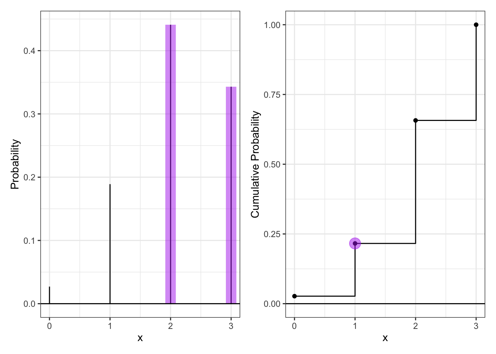
1.2 The Negative Binomial Distribution
In intermediate courses, we learn the Negative Binomial distribution that we use to model the number of “failures” until the \(r\)th success. Note that this approach still makes the simplifying assumption of independence in Bernoulli trials.
Specify the two cases necessary to compute the probability. Fully explain these probability statements in the context of a best two-out-of-three match and the Negative Binomial distribution. Finally, compute the probability that Player A wins the match and show you get the same result as the Binomial approach. Make sure write out your probability statement and work to write it in terms of the distribution function (PMF/CDF) to plot the probability using ggplot.
Solution: The two cases are (a) winning the first two games (WW) or (b) losing one game (WLW, LWW). For case (a), the probability statement would use the negative binomial distribution to compute the probability of 0 failures before the players 2nd victory, for case (b), the probability statement would use the negative binomial distribution to compute the probability of 1 failure before the players 2nd victory.
We sum these two probability statements to find the total probability of success using the Negative Binomial Distribution:
\[P(X \le 1) = P(X=0) + P(X=1)\]
\[X \sim \text{NegBinomial}(r=2, p=0.70)\] Where X is the number of losses before the player achieves their second win.
Code
r = 2
p = 0.7
ggdat = tibble(x = 0:3) |>
mutate(PMF = dnbinom(x,r,p),
CDF = pnbinom(x, r,p))
PMF.plot = ggplot() +
geom_linerange(data = ggdat,
aes(x = x, ymin = 0, ymax = PMF)) +
geom_linerange(data = ggdat |> filter(x<=1),
aes(x = x, ymin = 0, ymax = PMF),
color = "forestgreen", linewidth=5, alpha=0.50) +
geom_hline(yintercept = 0) +
scale_x_continuous("x", breaks=0:10) +
ylab("Probability") +
theme_bw()
CDF.plot = ggplot() +
geom_step(data=ggdat, aes(x = x, y = CDF)) +
geom_point(data=ggdat, aes(x = x, y = CDF)) +
geom_point(data=ggdat |> filter(x==1),
aes(x = x, y = CDF),
color="forestgreen", size=5, alpha=0.50) +
geom_hline(yintercept = 0) +
scale_x_continuous("x", breaks=0:10) +
ylab("Cumulative Probability") +
theme_bw()
PMF.plot | CDF.plot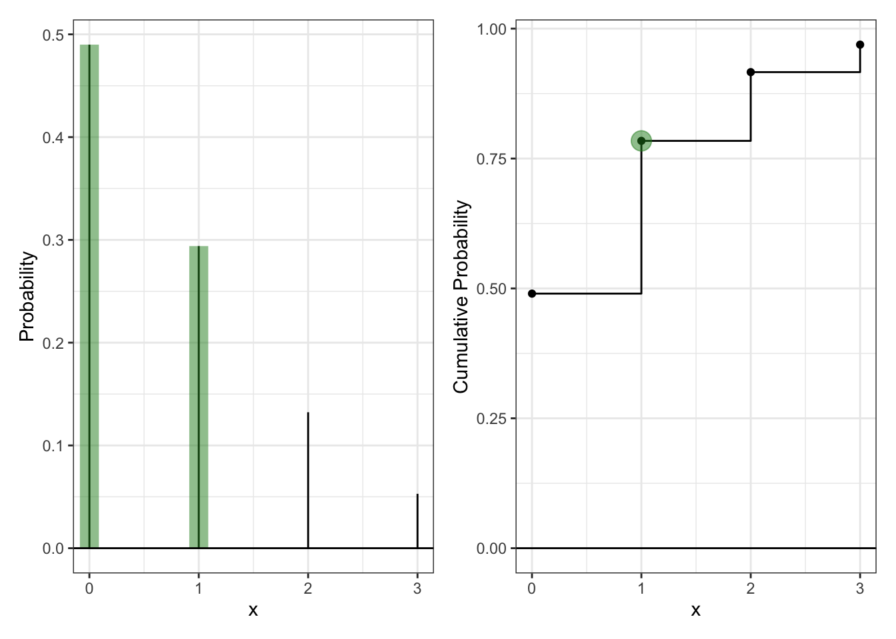
2 The Beta Binomial Distribution
One approach to generalize this modeling is to use a Beta-Binomial distribution. This distribution arrises when we let \(p\) be a random variable that follows a Beta distribution: \[\begin{align*}
P &\sim \text{Beta}(\alpha, \beta)\\
X &\sim \text{Binomial}(n, P).
\end{align*}\] This distribution is not part of base R, but is available using the _bbinom functions from the extraDistr package (Wolodzko 2026).
The primary benefit is that the Beta-Binomial enables us to specify some uncertainty about the skill of Player A, as \(p\) does not have to be fixed (e.g., \(p=0.70\)). Suppose the result of the best two-out-of-three match follows a Beta-Binomial distribution where \(\alpha=7\) and \(\beta=3\).
2.1 The Beta Part
- Plot the corresponding Beta distribution. Interpret the plot in the context of a best two-out-of-three match and the Binomial distribution.
Hint: The Beta distribution is available in baseRvia_beta().
Solution:
Code
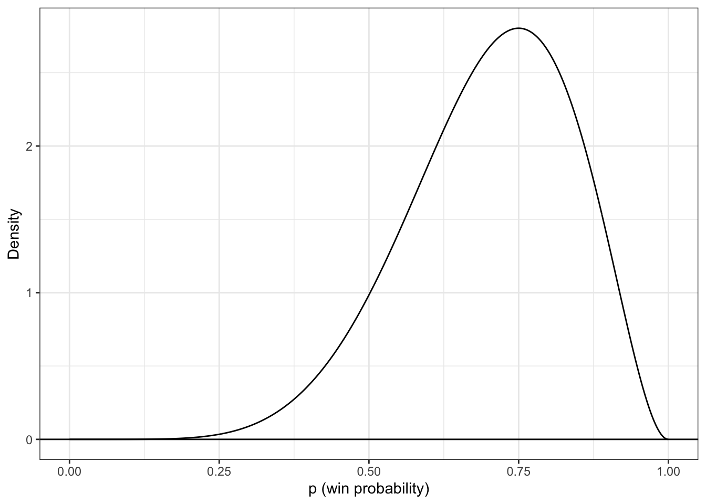
- How does the Beta incorporate uncertainty about the skill of Player A? Compute the mean and variance of the distribution.
Hint: You will find theintegrate(...)function helpful here. \[\begin{align*} E(P) &= \mu_P = \int_{0}^1 p f_P(p) dp\\ var(P) &= \sigma^2_P = \int_{0}^1 (p-\mu_P)^2 f_P(p) dp\\ \end{align*}\]
Solution: Beta incorporates uncertainty about the skill of player A by making the probability, \(p\), a random variable that follows the beta distribution, instead of the parameter being a fixed probability.
Code
0.7 with absolute error < 7.8e-15Code
0.01909091 with absolute error < 2.1e-16- What is the probability that Player A has a win probability of exactly 0.70? Make sure write out your probability statement and work to write it in terms of the distribution function (PDF/CDF) to plot the probability using
ggplot.
Hint: Think carefully about the properties of continuous distributions here.
Solution: The probability of a continuous random variable taking on a specific value is 0. Formally, we say: \[P(X=x) = 0\] for continuous random variables. Therefore, we say that the probability of Player A having a win probability of exactly 0.70, \[P(P=0.70) = 0\] For this reason, PMFs do not exist for continous random variables. However, we can demonstrate the idea by choosing a small window around \(p = 0.7\) and computing the in-between probability using CDFs.
\[P(P=0.7) \approx P(0.699999 \le P \le 0.700001) = F_P(0.700001) - F_P(0.699999)\]
The output, \(\approx 5.34 \times 10^{-6}\) is, as expected, very close to 0.
Code
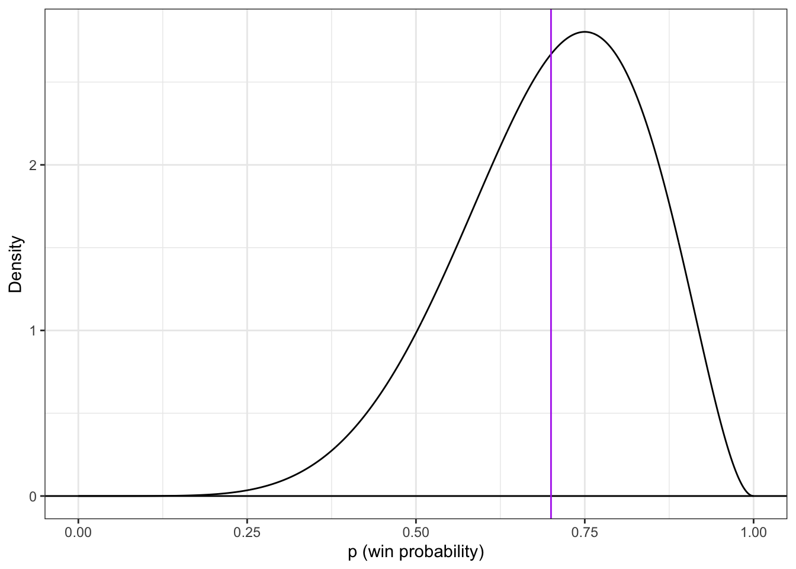
Remember that the area under the PDF corresponds to probability. When we look at the area under the curve for a single point, we are attempting to find the area of a line (which is illustrated by the dark orchid line at \(p=0.7\)). The area of a line is 0, thus confirming what we know about continous random variables.
- What is the probability that Player A has a win probability of at least 0.50? Make sure write out your probability statement and work to write it in terms of the distribution function (PDF/CDF) to plot the probability using
ggplot.
To do this, we simply use the CDF. \[P(P \ge 0.50) = 1 - P(P \le 0.50)\] \[ = 1 - F_{P}(0.50)\]
We plot this below:
Code
dat |>
ggplot() +
geom_line(aes(x = x,
y = CDF)) +
geom_point(aes(x = 0.5, y = pbeta(0.5, 7, 3)),
color = "darkgoldenrod2", size = 2) +
geom_hline(yintercept = pbeta(0.5, 7, 3),
color = "darkgoldenrod2") +
geom_hline(yintercept = 0) +
theme_bw() +
xlab("p (win probability)") +
ylab("Cumulative Probability")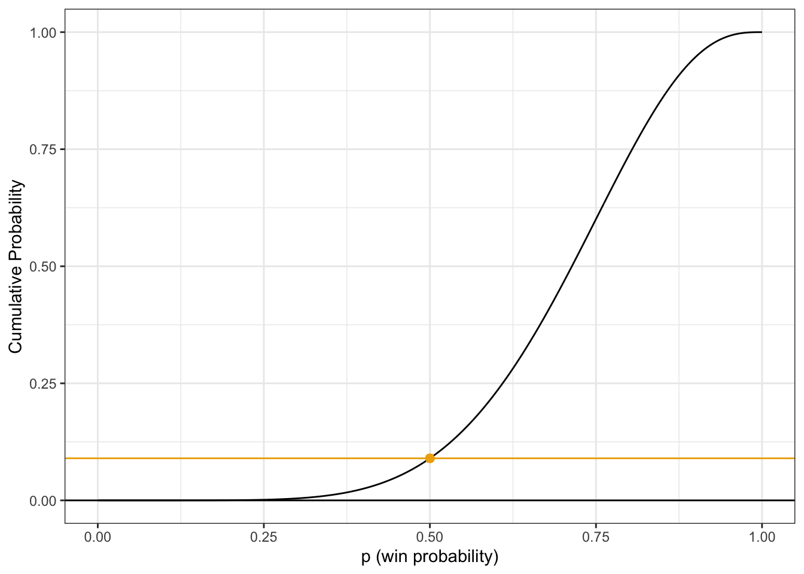
- What is the 90th percentile of Player A’s win probability based on this Beta distribution? Make sure write out your probability statement and work to write it in terms of the distribution function (PDF/CDF) to plot the percentile using
ggplot.
Solution We calculate the 90th percentile of Player A’s win probability by using the inverse CDF function with \(p = 0.90\). The written-out probability statement is as follows:
\[P(P \le p) = 0.90\]
\[F_P(p) = 0.90\]
\[p = F_P^{-1}(0.90)\]
Code
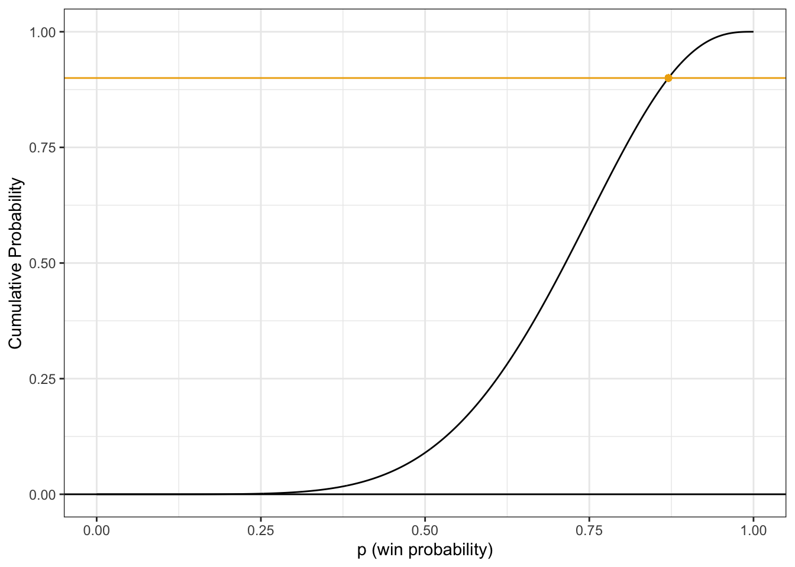
2.2 The Beta-Binomial Part
Compute the probability that Player A wins the match. Compare your result to the Binomial and Negative Binomial results. Make sure write out your probability statement and work to write it in terms of the distribution function (PMF/CDF) to plot the probability using ggplot
Solution
The probability of winning is slightly lower in the Beta-Binomial model (0.7636364 < 0.784). This is because the Beta-Binomial model assumes the player’s win probability is not fixed at 0.7, but that it is variable. The answers we obtain suggest that the lower match-winning probabilities drag the overall probability of winning a best-two-out-of-three down more than their higher counterparts.
2.3 The Why
Check the expected value and variance of each distribution.
Analytically, we have \[\begin{align*} E(X) &= np &&var(X) = np(1-p) \tag{Binomial Distribution}\\ E(X) &= n\left(\frac{\alpha}{\alpha+\beta}\right) &&var(X) = \frac{n \alpha \beta (\alpha + \beta + n)}{(\alpha+\beta)^2(\alpha + \beta + 1)} \tag{Beta-Binomial Distribution} \end{align*}\]
For each distribution, compute the mean number of legs won for player A.
Hint: You can perform the sum over the finite support set here. \[\begin{align*}
E(X) = \mu_X &= \sum_{i=0}^3 i f_X(i)\\
var(X) = \sigma^2_X &= \sum_{i=0}^3 (i-\mu_X)^2 f_X(i)
\end{align*}\]
Solution:
Binomial Distribution:
[1] 2.1[1] 0.63Beta-Binomial Distribution
[1] 2.1[1] 0.7445455Notice that the two distributions have the same expected value, but the Beta-Binomial distribution has a greater variance.
3 Altham’s Multiplicative Binomial Distribution
While the Beta-Binomial enables us to model cases where winning has a clustering effect (e.g., a “hot hand”).
3.1 Probability Mass Function
The mass function for this distribution is below. While it used to be available in the MBD package for R, this package is no longer available. \[f_X(x) = \frac{1}{c} {n \choose x} p^x (1-p)^{n-x} \theta^{x(n-x)}I(x \in \{0, 1, ..., n\})\] where \[c = \sum_{i=0}^n {n \choose i} p^i (1-p)^{n-i} \theta^{i(n-i)}\]
Write a function in R called daltbinom() for computing the PMF of this distribution. Use your function to plot the distribution where \(p=0.70\) where \(\theta=0.50\), \(\theta=1\), and \(\theta=1.50\). Comment on the differences in the context of a best two-out-of-three match
Solution:
Creating the Function
Plotting
Code
# A tibble: 12 × 3
x pmf theta
<int> <dbl> <chr>
1 0 0.0512 0.5
2 1 0.0896 0.5
3 2 0.209 0.5
4 3 0.650 0.5
5 0 0.027 1
6 1 0.189 1
7 2 0.441 1
8 3 0.343 1
9 0 0.0151 1.5
10 1 0.238 1.5
11 2 0.555 1.5
12 3 0.192 1.5 Code
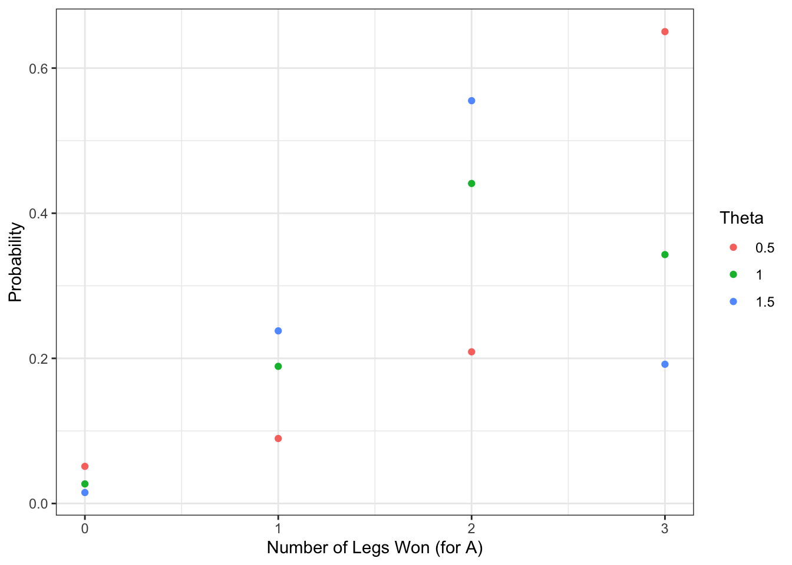
Interpretation: The most-likely outcome for the player with \(\theta = 0.5\) is 3 (plot is increasing, so they are more likely to win more legs than fewer legs). Furthermore, the player with \(\theta = 0.5\) has the highest chance of winning all 3 legs (a dominant outcome) compared to the other 2 players. The players with \(\theta = 1\) and \(\theta = 1.5\) don’t see this strictly increasing pattern, and both are most likely to win 2 legs. What the three players do have in common is that the least likely outcome for all 3 is winning 0 games. When theta increases, it seems to make more balanced outcomes more probable, so 2-1 and 1-2 results become more likely.
3.2 Cumulative Distribution Function
Use your daltbinom() function to create a paltbinom() function for computing the CDF of this distribution. Use your function to plot the distribution where \(p=0.70\) where \(\theta=0.50\), \(\theta=1\), and \(\theta=1.50\).
Solution: Function:
Plot:
Code
# A tibble: 12 × 3
x cdf theta
<int> <dbl> <chr>
1 0 0.0512 0.5
2 1 0.141 0.5
3 2 0.350 0.5
4 3 1 0.5
5 0 0.027 1
6 1 0.216 1
7 2 0.657 1
8 3 1 1
9 0 0.0151 1.5
10 1 0.253 1.5
11 2 0.808 1.5
12 3 1 1.5 Code
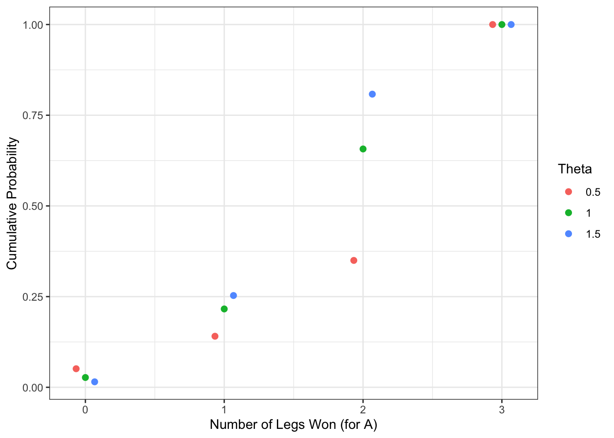
3.3 The Winning Probability
Compute the probability that Player A wins the match using Altham’s Multiplicative Binomial Distribution. Compare your result to the Binomial and Negative Binomial results. Compare your results to the Beta-Binomial model, too. Make sure write out your probability statement and work to write it in terms of the distribution function (PMF/CDF) to plot the probability using ggplot.
Solution: Similarly, we find the probability of winning 2 or more matches using the CDF:
\[P(\text{A wins}) = P(X \ge 2) = 1 - P(X \le 1) = 1 - F(1)\]
The difference this time is that our CDF has the additional parameter, \(\theta\).
[1] 0.8592417 0.7840000 0.7469930Plot:
Code
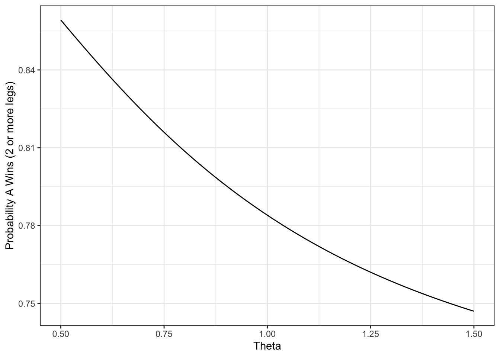
As \(\theta\) increases, the probability of winning decreases.
4 Altham’s Multiplicative Beta-Binomial Distribution
You may have wondered – “Can we do the Beta thing with Altham’s version of the Binomial Distribution?” The answer is yes!
4.1 Probability Mass Function
The mass function for this distribution is below. \[f_X(x) = \left[\int_{0}^1 dp \left(\frac{1}{c} {n \choose x} p^x (1-p)^{n-x} \theta^{x(n-x)}\right)\left(\frac{\Gamma(\alpha+\beta)}{\Gamma(\alpha)\Gamma(\beta)} p^{\alpha-1}(1-p)^{\beta-1}\right)\right]I(x \in \{0, 1, ..., n\})\]
Write a function in R called daltbbinom() for computing the PMF of this distribution. Use your function to plot the distribution where \(\alpha=7\) and \(\beta=3\) where \(\theta=0.50\), \(\theta=1\), and \(\theta=1.50\). Comment on the differences in the context of a best two-out-of-three match.
Hint: You can use the integrate() in R to compute the integral. Note that this requires the function to be vectorized – it should be unless you have added any block conditionals.
Solution:
Code
Plot:
Code
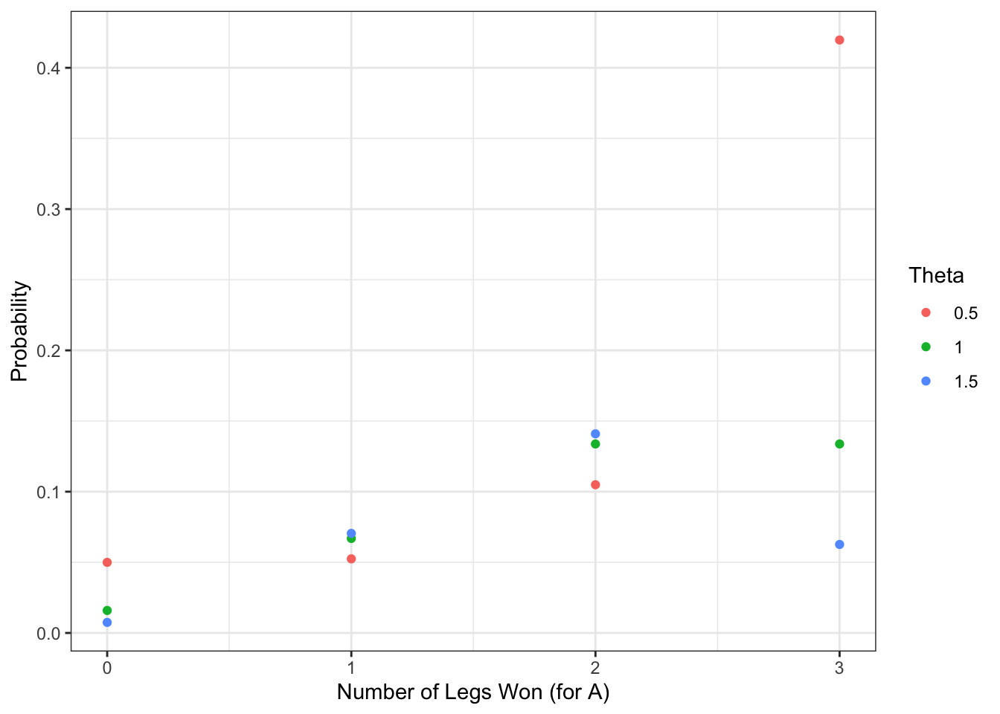
Similar to the baseline Altham Binomial case, we notice that lower \(\theta\) (=0.5) makes winning all 3 legs the most likely outcome, whereas \(\theta = 1\) and \(\theta = 1.5\) have winning 2 games as the most likely outcome.
5 A Comparison
Compute the probabilities for all outcomes for Player A.
- Loses 0-2 (LL”L”, LL”W”)
- Loses 1-2 (WLL, LWL)
- Wins 2-0 (WW”W”, WW”L”)
- Wins 2-1 (LWW, WLW)
Note: You’ll need to define these outcomes in terms of the random variable.
Create a bar plot (or column plot) using ggplot to show the probability of each outcome under the following conditions:
- Binomial
- Negative Binomial
Note: You can compute the lose probabilities the same way as the win probabilities using success probability (\(1-p\)) - Beta-Binomial
- Althman Binomial with \(\theta=0.50\) and \(\theta=1.5\)
- Althman Beta-Binomial with \(\theta=0.50\) and \(\theta=1.5\)
Comment on the differences in the context of a best two-out-of-three match.
Solution: Binomial Outcomes: \[P(0-2) = f(0) + \frac{1}{3}f(1)\] \[P(1-2) = \frac{2}{3}f(1)\]
This is because there are 3 equally likely ways to have exactly one win: 1 of them gives a 0–2 result and 2 of them give a 1–2 result. Therefore, we split \(f(1)\) using \(\frac{1}{3}\) and \(\frac{2}{3}\)
\[P(2-0) = f(3) + \frac{1}{3}f(2)\] \[P(2-1) = \frac{2}{3}f(2)\]
Negative Binomial Outcomes: \[P(0-2) = (1 - p)^2 \] \[P(1-2) = 2p(1-p)^2 \] \[P(2-0) = P(X=0) = f(0) \] \[P(2-1) = P(X=1) = f(1)\]
Beta-Binomial Outcomes: Note: these are the same as Binomial, except now \(P\) is not fixed, but instead a random variable that follows the Beta distribution (\(P \sim \text{Beta}(\alpha, \beta)\)). \[P(0-2) = f(0) + \frac{1}{3}f(1)\] \[P(1-2) = \frac{2}{3}f(1)\] \[P(2-0) = f(3) + \frac{1}{3}f(2)\] \[P(2-1) = \frac{2}{3}f(2)\]
Altham Binomial Outcomes: Note: these are the same as the Binomial, except the PMF is a different function with parameters \(\theta = 0.50\) and \(\theta = 1.5\) for the two separate cases. \[P(0-2) = f(0) + \frac{1}{3}f(1)\] \[P(1-2) = \frac{2}{3}f(1)\] \[P(2-0) = f(3) + \frac{1}{3}f(2)\] \[P(2-1) = \frac{2}{3}f(2)\]
Altham Beta-Binomial Outcomes: Note: these are the same as the Altham Binomial (including the two values we use for \(\theta\)), except now \(P\) is not fixed, but instead a random variable that follows the Beta distribution (\(P \sim \text{Beta}(\alpha, \beta)\)). \[P(0-2) = f(0) + \frac{1}{3}f(1)\] \[P(1-2) = \frac{2}{3}f(1)\] \[P(2-0) = f(3) + \frac{1}{3}f(2)\] \[P(2-1) = \frac{2}{3}f(2)\]
Code
# Probabilities
p=0.7
a=7
b=3
#Binomial
binom1 = dbinom(x=0,size=3,prob=p) + (1/3)*dbinom(x=1,size=3,prob=p)
binom2 = (2/3)*dbinom(x=1,size=3,prob=p)
binom3 = dbinom(x=3,size=3,prob=p) + (1/3)*dbinom(x=2,size=3,prob=p)
binom4 = (2/3)*dbinom(x=2,size=3,prob=p)
#Negative Binomial
negBinom1 = (1-p)^2
negBinom2 = 2*p*(1-p)^2
negBinom3 = dnbinom(x=0,size=2,prob=p)
negBinom4 = dnbinom(x=1,size=2,prob=p)
#Beta Binomial
betaBinom1 = dbbinom(x=0,size=3,alpha=a,beta=b) + (1/3)*dbbinom(x=1,size=3,alpha=a,beta=b)
betaBinom2 = (2/3)*dbbinom(x=1,size=3,alpha=a,beta=b)
betaBinom3 = dbbinom(x=3,size=3,alpha=a,beta=b) + (1/3)*dbbinom(x=2,size=3,alpha=a,beta=b)
betaBinom4 = (2/3)*dbbinom(x=2,size=3,alpha=a,beta=b)
#Altham Binomial
altBinom1.05 = daltbinom(n=3,x=0,p=p,theta=0.5) + (1/3)*daltbinom(n=3,x=1,p=p,theta=0.5)
altBinom2.05 = (2/3)*daltbinom(n=3,x=1,p=p,theta=0.5)
altBinom3.05 = daltbinom(n=3,x=3,p=p,theta=0.5) + (1/3)*daltbinom(n=3,x=2,p=p,theta=0.5)
altBinom4.05 = (2/3)*daltbinom(n=3,x=2,p=p,theta=0.5)
altBinom1.15 = daltbinom(n=3,x=0,p=p,theta=1.5) + (1/3)*daltbinom(n=3,x=1,p=p,theta=1.5)
altBinom2.15 = (2/3)*daltbinom(n=3,x=1,p=p,theta=1.5)
altBinom3.15 = daltbinom(n=3,x=3,p=p,theta=1.5) + (1/3)*daltbinom(n=3,x=2,p=p,theta=1.5)
altBinom4.15 = (2/3)*daltbinom(n=3,x=2,p=p,theta=1.5)
#Altham Beta Binomial
altBBinom1.05 = daltbbinom(x=0,n=3,a=a,b=b,theta=0.5) +
(1/3)*daltbbinom(x=1,n=3,a=a,b=b,theta=0.5)
altBBinom2.05 = (2/3)*daltbbinom(x=1,n=3,a=a,b=b,theta=0.5)
altBBinom3.05 = daltbbinom(x=3,n=3,a=a,b=b,theta=0.5)
+ (1/3)*daltbbinom(x=2,n=3,a=a,b=b,theta=0.5)[1] 0.03497286Code
altBBinom4.05 = (2/3)*daltbbinom(x=2,n=3,a=a,b=b,theta=0.5)
altBBinom1.15 = daltbbinom(x=0,n=3,a=a,b=b,theta=1.5) +
(1/3)*daltbbinom(x=1,n=3,a=a,b=b,theta=1.5)
altBBinom2.15 = (2/3)*daltbbinom(x=1,n=3,a=a,b=b,theta=1.5)
altBBinom3.15 = daltbbinom(x=3,n=3,a=a,b=b,theta=1.5) +
(1/3)*daltbbinom(x=2,n=3,a=a,b=b,theta=1.5)
altBBinom4.15 = (2/3)*daltbbinom(x=2,n=3,a=a,b=b,theta=1.5)
# Plots
df.long = tibble(
outcome = rep(c("0-2", "1-2", "2-0", "2-1"), 7),
prob = c(binom1, binom2, binom3, binom4,
negBinom1, negBinom2, negBinom3, negBinom4,
betaBinom1, betaBinom2, betaBinom3, betaBinom4,
altBinom1.05, altBinom2.05, altBinom3.05, altBinom4.05,
altBinom1.15, altBinom2.15, altBinom3.15, altBinom4.15,
altBBinom1.05, altBBinom2.05, altBBinom3.05, altBBinom4.05,
altBBinom1.15, altBBinom2.15, altBBinom3.15, altBBinom4.15),
model = rep(c("Binomial",
"Negative Binomial",
"Beta-Binomial",
"Altham Binomial (0.5)",
"Altham Binomial (1.5)",
"Altham Beta-Binomial (0.5)",
"Altham Beta-Binomial (1.5)"),
each = 4)
)
# graphs
#| label: fig-outcome-comparison
#| fig-cap: "Comparison of match outcome probabilities across models."
#| fig-align: center
df.long |>
ggplot(aes(x = outcome, y = prob, fill = model)) +
geom_col(position = "dodge") +
theme_bw() +
labs(
x = "Match Outcome",
y = "Probability",
fill = "Model"
)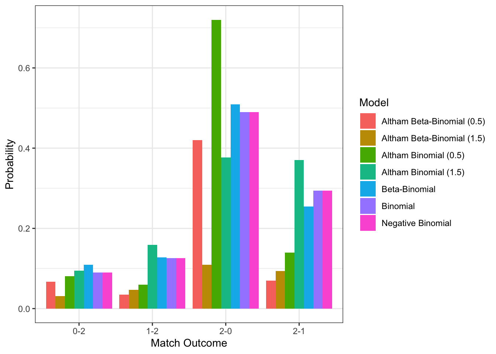
Commentary: The first and most trivial thing to point out is that the Binomial and Negative Binomial outcomes are identical. This is because the two use the same probabilities, but frames the situation differently. Whereas the simple binomial models is a fixed number of games, the negative binomial models a “stopping criteria”, which leads to that same number of games being played with the same probabilities.
The Beta-Binomial model slightly changes these probabilities, but not in an incredibly noticeable way.
The Altham Binomial Model with \(\theta = 0.5\) shows an immense increase in the probability of 2-0 wins. The Altham Binomial Model with \(\theta = 1.5\) actually decreases the proportion of 2-0 wins from the normal Binomial case; however, it drastically improves the odds of 2-1 games.
Following the prior Binomial-to-Beta-Binomial pattern, we see that the plots for Altham’s Beta-Binomial match up very similarly with their non-Beta counterparts, just with slight variations due to the randomness of \(P\).
References
Wolodzko, Tymoteusz. 2026. extraDistr: Additional Univariate and Multivariate Distributions. https://doi.org/10.32614/CRAN.package.extraDistr.